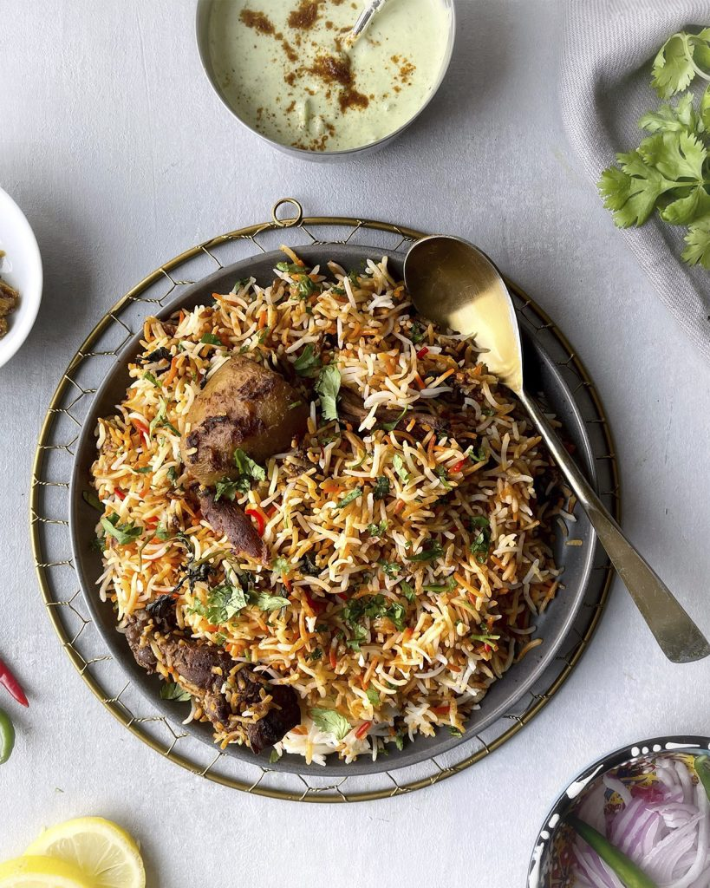

CHICKEN BIRYANI RECIPE

Description
Enjoy the tempting biryani recipe's spicy mixture of spices and delicate meat covered with fragrant basmati rice.
Each bite of this saffron, ginger, and clove-infused dish offers a taste experience inspired of Pakistan's vibrant streets.
Ingredients
- Chicken (bone-in,skin-on)
- Aromatics (ginger garlic paste)
- Herbs (Cilantro, mint leaves)
- Herbs (Cilantro, mint leaves)
- Onions
- Chili Peppers either raw green chilies or powdered red chilies
- Ghee
- Basmati rice
Steps
- Marinate the chicken in spices, herbs, and ginger-garlic paste.
- Separately prepare the fried onions.
- Boil rice in part with entire spices.
- Layer marinated chicken, fried onions, and rice in a pot.
- Marinate the chicken with yoghurt, spices, and lemon juice.
- Cook rice with entire spices until halfway cooked.
- In a pot, layer rice and chicken, then add fried onions and herbs in between.
- Cover and simmer over low heat until the rice and chicken are thoroughly cooked, resulting in a tasty biryani.